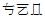

⎕UCS converts (Unicode) characters into integers and vice versa.
The optional left argument X is a character vector containing the name of a variable-length Unicode encoding scheme which must be one of:
If not, a DOMAIN ERROR is issued.
If X is omitted, Y is a simple character or integer array, and the result R is a simple integer or character array with the same rank and shape as Y.
If X is specified, Y must be a simple character or integer vector, and the result R is a simple integer or character vector.
Used monadically, ⎕UCS simply converts characters to Unicode code points and vice-versa.
With a few exceptions, the first 256 Unicode code points correspond to the ANSI character set.
⎕UCS 'Hello World' 72 101 108 108 111 32 87 111 114 108 100 ⎕UCS 2 11⍴72 101 108 108 111 32 87 111 114 108 100 Hello World Hello World
The code points for the Greek alphabet are situated in the 900's:
⎕UCS 'καλημέρα ελλάδ' 954 945 955 951 956 941 961 945 32 949 955 955 940 948
Unicode also contains the APL character set. For example:
⎕UCS 123 40 43 47 9077 41 247 9076 9077 125
{(+/⍵)÷⍴⍵}
Dyadic ⎕UCS is used to translate between Unicode characters and one of three standard variable-length Unicode encoding schemes, UTF-8, UTF-16 and UTF-32. These represent a Unicode character string as a vector of 1-byte (UTF-8), 2-byte (UTF-16) and 4-byte (UTF-32) signed integer values respectively.
'UTF-8' ⎕UCS 'ABC' 65 66 67 'UTF-8' ⎕UCS 'ABCÆØÅ' 65 66 67 195 134 195 152 195 133 'UTF-8' ⎕UCS 195 134, 195 152, 195 133 ÆØÅ 'UTF-8' ⎕UCS 'γεια σου' 206 179 206 181 206 185 206 177 32 207 131 206 191 207 133 'UTF-16' ⎕UCS 'γεια σου' 947 949 953 945 32 963 959 965 'UTF-32' ⎕UCS 'γεια σου' 947 949 953 945 32 963 959 965
Because integers are signed, numbers greater than 127 will be represented as 2-byte integers (type 163), and are thus not suitable for writing directly to a native file. To write the above data to file, the easiest solution is to use ⎕UCS to convert the data to 1-byte characters and append this data to the file:
(⎕UCS 'UTF-8' ⎕UCS 'ABCÆØÅ') ⎕NAPPEND tn
Note regarding UTF-16: For most characters in the first plane of Unicode (0000-FFFF), UTF-16 and UCS-2 are identical. However, UTF-16 has the potential to encode all Unicode characters, by using more than 2 bytes for characters outside plane 1.
'UTF-16' ⎕UCS 'ABCÆØÅ⍒⍋' 65 66 67 198 216 197 9042 9035 ⎕←unihan←⎕UCS (2×2*16)+⍳3 ⍝ x20001-x20003  'UTF-16' ⎕UCS unihan 55360 56321 55360 56322 55360 56323
⎕UCS will generate TRANSLATION ERROR (event number 92) if the argument cannot be converted. In the Classic Edition, a TRANSLATION ERROR is generated if the result is not in ⎕AV or the numeric argument is not in ⎕AVU.